訪問看護 AI 文書作成支援ツール
操 作 マ ニ ュ ア ル
Ver. 1.0 ｜ 2026年4月
▶ 動画でダウンロード〜初期設定の流れを確認できます
KOWAIROは現在テスト配信中のため、Apple の TestFlight アプリ経由でインストールします。
KOWAIRO は録音機能を使用するため、マイクへのアクセス許可が必要です。
スタッフアカウントの発行や利用者情報の一括管理は、ブラウザから管理画面にアクセスして行います。
管理者から発行された ID・パスワードでログインしてください。
KOWAIROは、訪問看護師が現場でしゃべるだけで看護記録・報告書・会議議事録などの文書を自動生成するAIツールです。
録音した音声をAIが解析し、利用者の病名・既往歴・介護度などの情報と組み合わせることで、精度の高い文書を短時間で作成します。
| 機能 | できること |
|---|---|
| 録音→記録作成 | 訪問後に口頭で報告するだけでSOAP形式の看護記録を自動生成 |
| 電話要約 | 電話の内容をしゃべるだけで議事録・申し送りメモに変換 |
| カンファレンス | 担当者会議・退院調整会議などの録音から議事録を生成 |
| 月次レポート | 訪問看護報告書のサマリ部分を月次でまとめて生成 |
| 即時録音開始 | 利用者を選ばずにその場で録音開始し、後から紐づけ可能 |
| OCR読み込み | 訪問看護指示書・ケアプランをカメラで読み取り利用者情報を自動入力 |
KOWAIROを起動するとログイン画面が表示されます。ログイン方法は2種類あります。
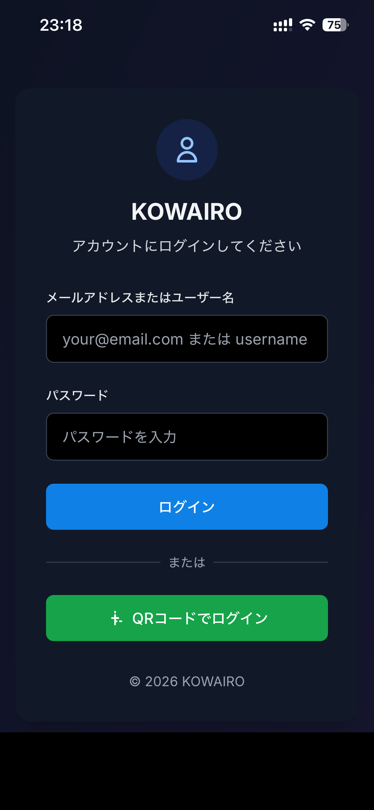
| 方法 | 手順 |
|---|---|
| メールアドレス/ ユーザー名でログイン |
メールアドレスまたはユーザー名とパスワードを入力し「ログイン」をタップ |
| QRコードでログイン | 管理者が発行したQRコードをカメラで読み取るだけでログイン完了。 スマートフォンの引き継ぎや新しいデバイスへの追加に便利 |
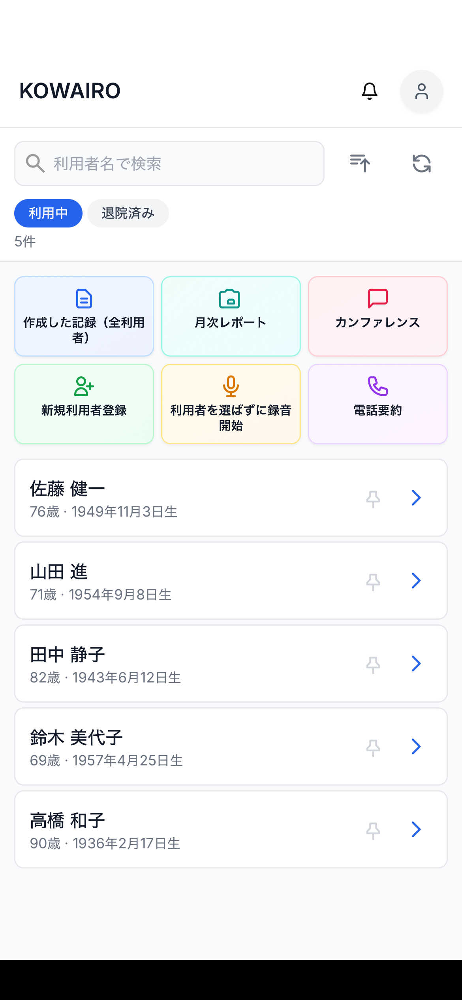
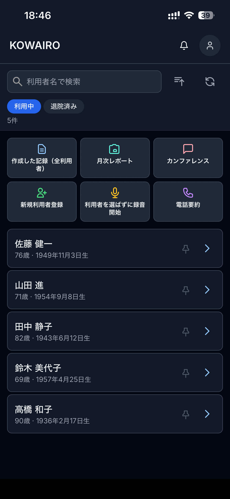
ダークモードとライトモードは設定から切り替えられます（第12章参照）。
ホーム画面中央に、よく使う機能へのショートカットが並んでいます。
| タイル | タップすると |
|---|---|
| 作成した記録（全利用者） | 全利用者の記録一覧を表示。最新のものから並ぶ |
| 月次レポート | 利用者ごとの月次報告書作成画面へ |
| カンファレンス | 会議録音→議事録生成の開始画面へ |
| 新規利用者登録 | 利用者の新規登録フォームを開く |
| 利用者を選ばずに録音開始 | 利用者を指定せずすぐに録音を開始 |
| 電話要約 | 電話後の口頭報告を議事録形式にまとめる |
| アイコン | 役割 |
|---|---|
| 🔔（ベル） | お知らせ・通知の確認 |
| 👤（人型） | アカウント設定・テーマ変更・ログアウト |
| ↑（ソート） | 利用者一覧の並び順を変更 |
| 🔄（更新） | 利用者一覧を最新の状態に更新 |
一覧上部に「利用中」「退院済み」タブがあり、切り替えで表示する利用者を絞り込めます。
📌（ピンアイコン）をタップすると利用者を上部に固定でき、頻繁に訪問する方をすぐ見つけられます。
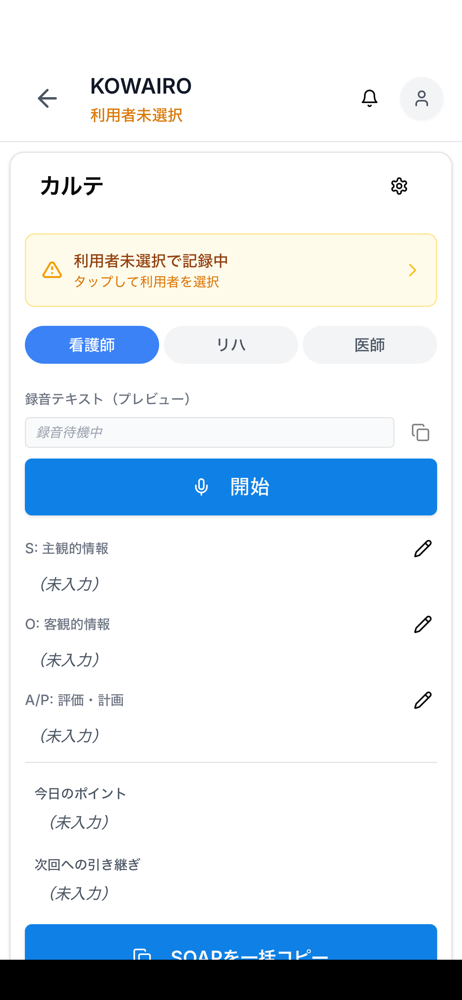
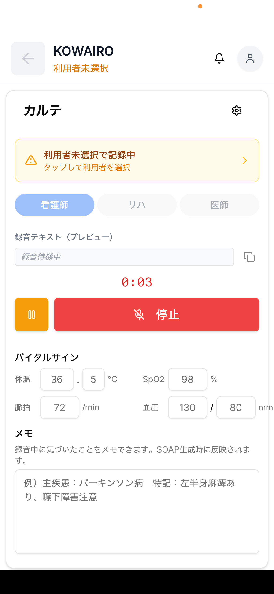
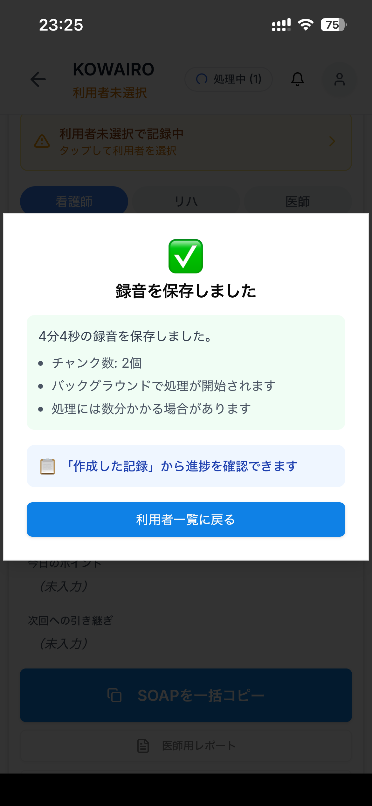
| 項目 | 説明 |
|---|---|
| 職種タブ（看護師 / リハ / 医師） | 記録を作成する職種を選択。職種に合わせたSOAP形式で出力される |
| 録音テキスト（プレビュー） | 録音中の音声がリアルタイムでテキスト化されて表示される |
| バイタルサイン | 体温・SpO2・脈拍・血圧を録音中に入力可能。AI生成に反映される |
| メモ | 確実に残したい事項を手入力。SOAP生成時に参照される |
| 一時停止ボタン（オレンジ） | 録音を一時停止。再タップで再開 |
| 停止ボタン（赤） | 録音を終了し、AI処理を開始 |
KOWAIROの記録はSOAP形式で生成されます。
| 項目 | 内容 |
|---|---|
| S（主観的情報） | 利用者の訴え・自覚症状 |
| O（客観的情報） | バイタルサイン・観察所見 |
| A/P（評価・計画） | アセスメントと今後のケア計画 |
| 今日のポイント | 今回の訪問で特に重要だった事項 |
| 次回への引き継ぎ | 次回訪問者へ伝えるべき申し送り事項 |
あらかじめ利用者の主病名・既往歴・介護度・訪問看護指示書の内容を登録しておくと、AIがそれを踏まえた記録文を生成します（詳細は第10章）。
医師・ケアマネジャー・他事業所などと電話で連絡を取った後、内容を記録に残したいときに使います。電話を切った直後に、記憶が新鮮なうちに話しかけるだけで議事録・申し送りメモが完成します。
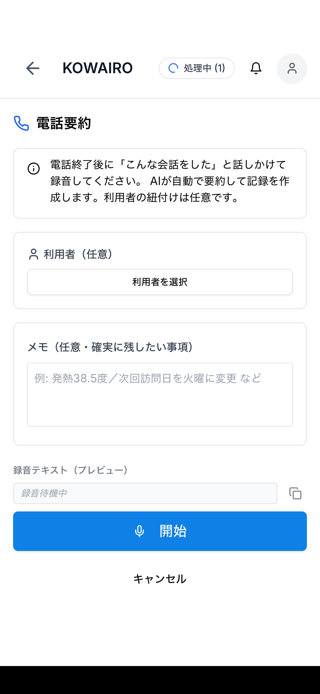
月末に提出する訪問看護報告書のサマリ（病状の経過・看護の内容など）をAIが自動生成します。その月に作成した訪問記録を集約し、変化点や特記事項をまとめます。
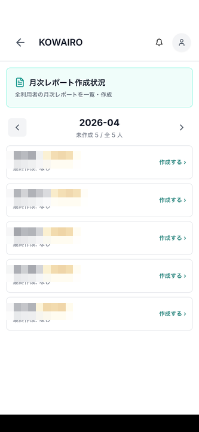
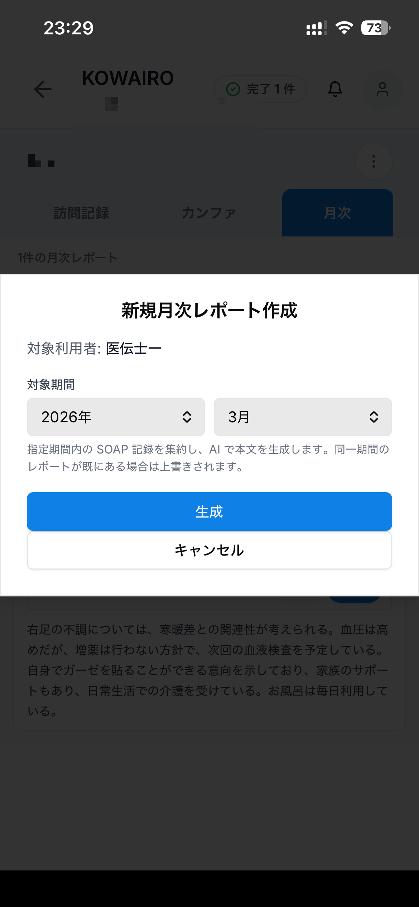
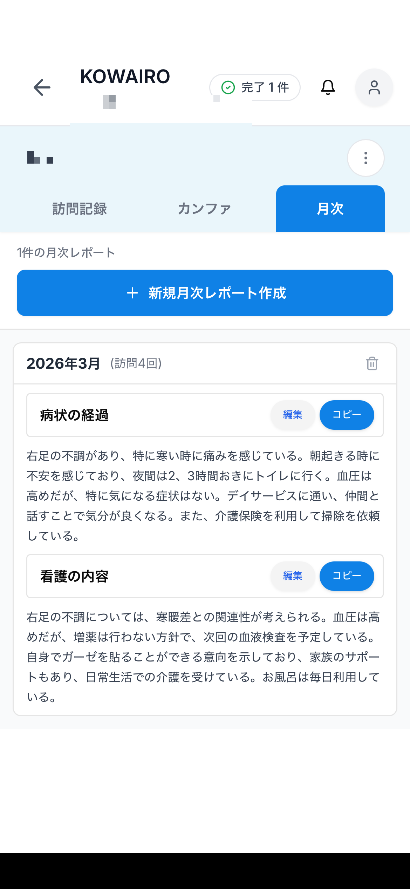
| シーン | 理由 |
|---|---|
| 初めて訪問する新規利用者 | まだ利用者登録が済んでいない |
| 移動中・記録直後でとにかく急いでいる | 利用者を選ぶ時間も惜しい |
| 複数の訪問が立て続けに入っている | 後でまとめて紐づけたい |
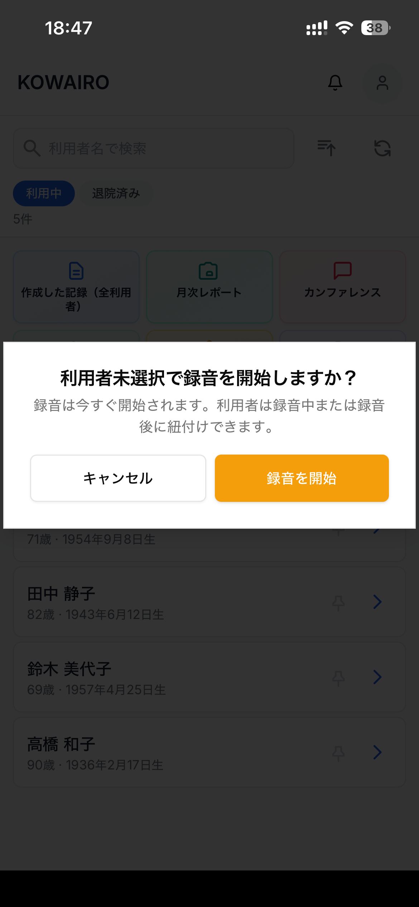
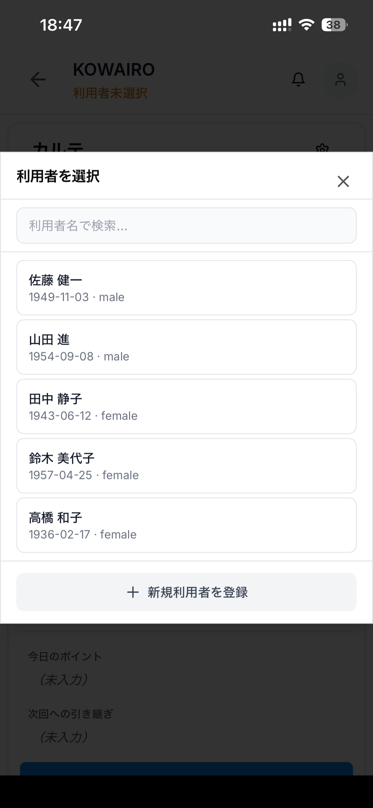
| 会議の種類 | 利用者紐づけ |
|---|---|
| 担当者会議（サービス担当者会議） | ✅ 対象の利用者に紐づけ |
| 退院調整会議・病院カンファレンス | ✅ 対象の利用者に紐づけ |
| 事業所内会議・研修 | — 紐づけなし |
| 法人全体の会議・勉強会 | — 紐づけなし |
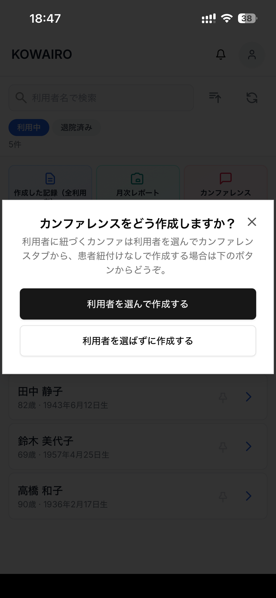
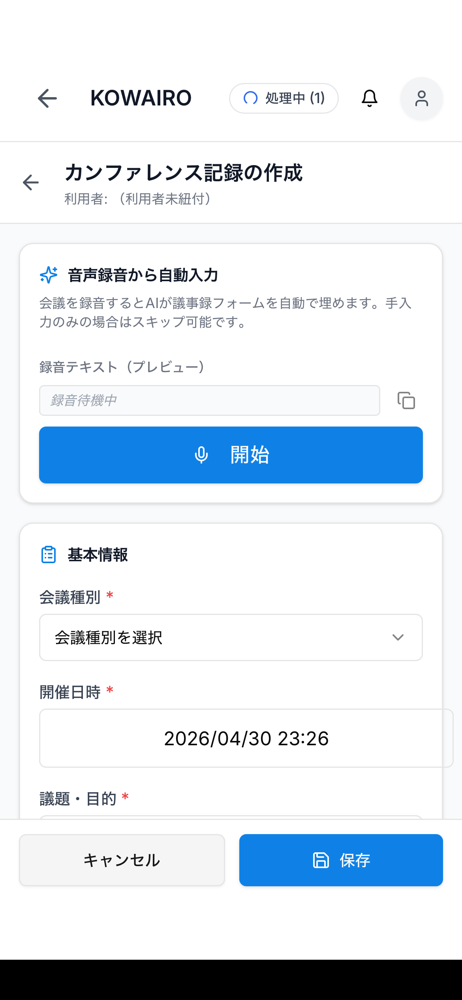
KOWAIROのAIは、利用者の医療・ケア情報を参照して記録文書を生成します。情報が充実しているほど、より適切な文書が生成されます。
| 登録情報 | AIへの影響 |
|---|---|
| 主疾患 | 病態に合った観察項目・アセスメント用語を使用 |
| 既往歴 | リスクを考慮した記載を追加 |
| アレルギー | 薬剤・処置に関する記載で注意喚起 |
| 介護度 | ADLレベルに応じた文体・内容に調整 |
| 訪問看護指示書の内容 | 指示に沿った観察・処置の記載を強化 |
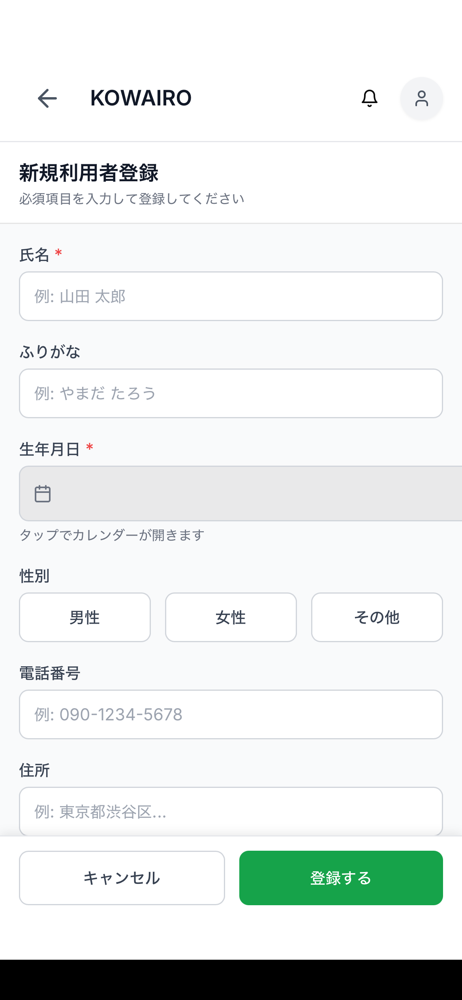


紙の書類をカメラで撮影するだけで、記載内容をKOWAIROに自動入力できます。
| 書類 | 主に読み取られる情報 |
|---|---|
| 訪問看護指示書 | 主病名・病状・指示内容・留意事項・薬剤情報 |
| 訪問看護計画書 | 看護目標（長期・短期）・問題点・具体的ケア内容・評価予定日 |
| 居宅サービス計画書（ケアプラン） | 介護度・長期目標・短期目標・サービス内容 |
| 診療情報提供書（紹介状） | 既往歴・現病歴・使用薬剤・禁忌事項 |
| 退院サマリー | 入院経過・退院時状態・今後の方針 |
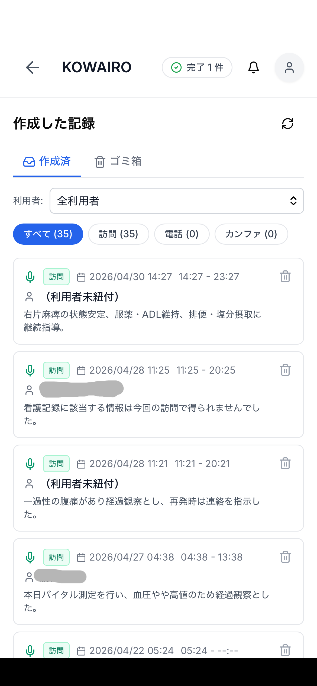
ホーム画面の「作成した記録（全利用者）」タイルをタップすると、事業所全体の記録が新しい順に並びます。
| フィルタ | 表示される記録 |
|---|---|
| すべて | 訪問記録・電話要約・カンファレンス記録の全件 |
| 訪問 | 訪問時のSOAP記録のみ |
| 電話 | 電話要約記録のみ |
| カンファ | カンファレンス議事録のみ |
「利用者」プルダウンで特定の利用者に絞り込むこともできます。「ゴミ箱」タブから削除した記録を復元できます。
ホーム画面右上の👤アイコンをタップすると設定メニューが表示されます。
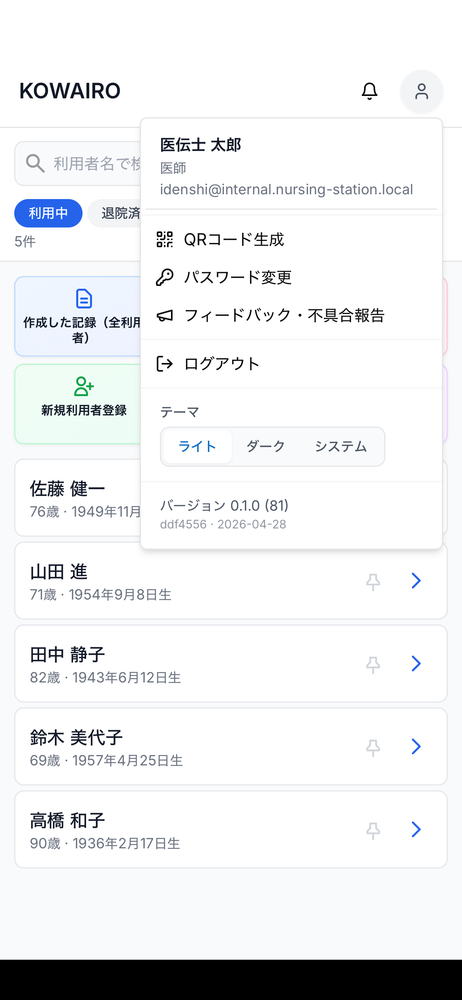
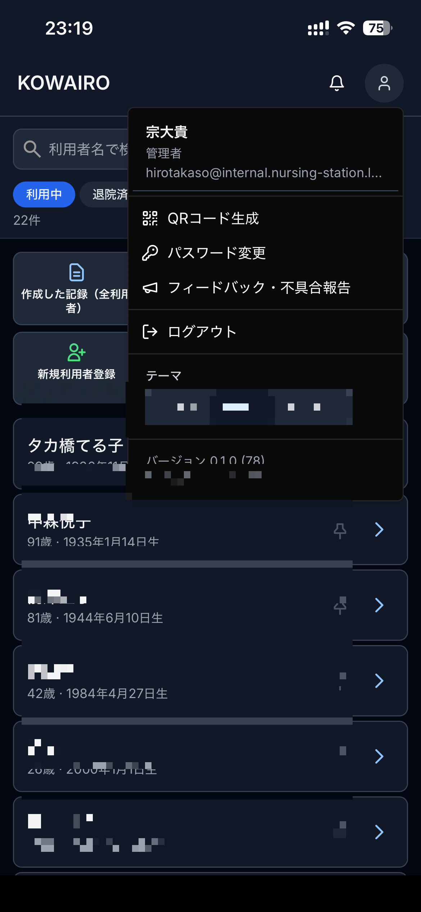
| メニュー項目 | 内容 |
|---|---|
| QRコード生成 | 自分のアカウントへのログイン用QRコードを表示。別のデバイスへの引き継ぎに使用 |
| パスワード変更 | 現在のパスワードを変更する |
| フィードバック・不具合報告 | アプリへの意見や不具合を開発チームに送信 |
| ログアウト | アカウントからログアウトする |
| テーマ（ライト / ダーク / システム） | 画面の表示テーマを切り替える |
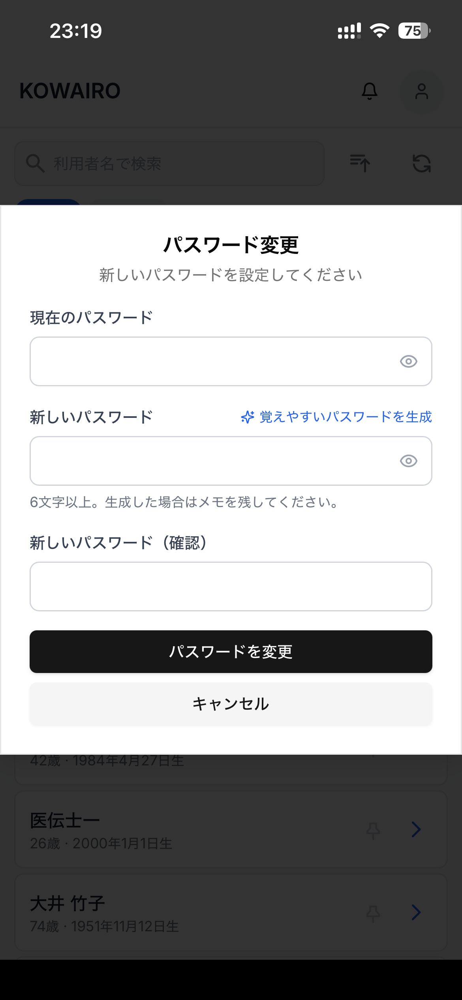
設定メニュー下部の「テーマ」で表示モードを切り替えられます。
| 設定 | 表示 |
|---|---|
| ライト | 白背景・通常表示 |
| ダーク | 黒背景・夜間や暗所での使用に最適 |
| システム | スマートフォンのシステム設定（時間帯による自動切替など）に従う |
録音停止後に生成された文書を手動で編集できます。AIは文脈を読んで正しい内容を生成しようとしますが、誤りがあれば各項目の✏️アイコンから直接テキストを修正して保存してください。
マイクから口を離しすぎないようにしてください。風の強い屋外や騒音の多い場所では認識精度が下がることがあります。はっきりとした速さで話すと精度が向上します。スマートフォンのマイク許可設定もご確認ください。
録音停止後、AIはバックグラウンドで処理を開始します。数秒〜数分かかる場合があります。処理中は画面上部に「処理中 (N)」のバッジが表示されます。処理完了後、「作成した記録」から確認できます。
手書き文字が多い書類や、著しく薄い印字・折れ目の多い書類は認識精度が下がることがあります。該当箇所は「訪問看護指示書」欄に手動でテキストを貼り付け・入力してください。
「作成した記録（全利用者）」一覧を開き、「（利用者未紐付）」と表示されている記録をタップします。詳細画面の「利用者未選択で記録中」バナーをタップして対象の利用者を選択してください。
同一月・同一利用者のレポートは再生成時に上書きされます。「新規月次レポート作成」の画面で「指定期間内のSOAP記録を集約し、AIで本文を生成します。同一期間のレポートが既にある場合は上書きされます。」と表示されます。
KOWAIROは医療情報の取り扱いに関するセキュリティ基準に準拠した設計をしています。データは暗号化されて保存・通信されます。詳細は管理者またはサポート窓口にお問い合わせください。